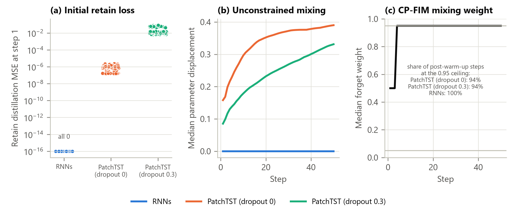
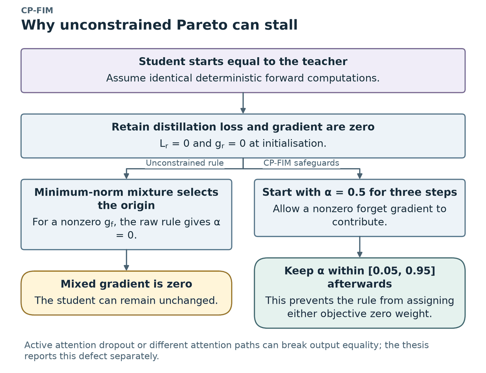
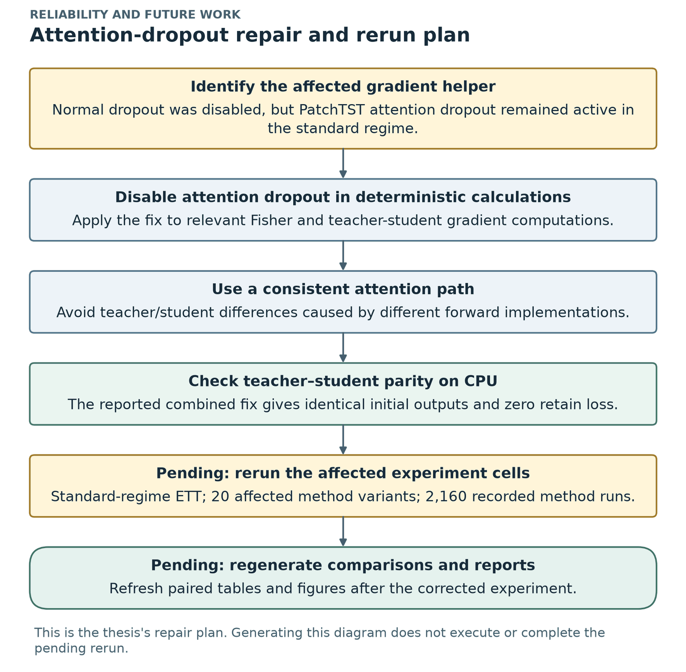
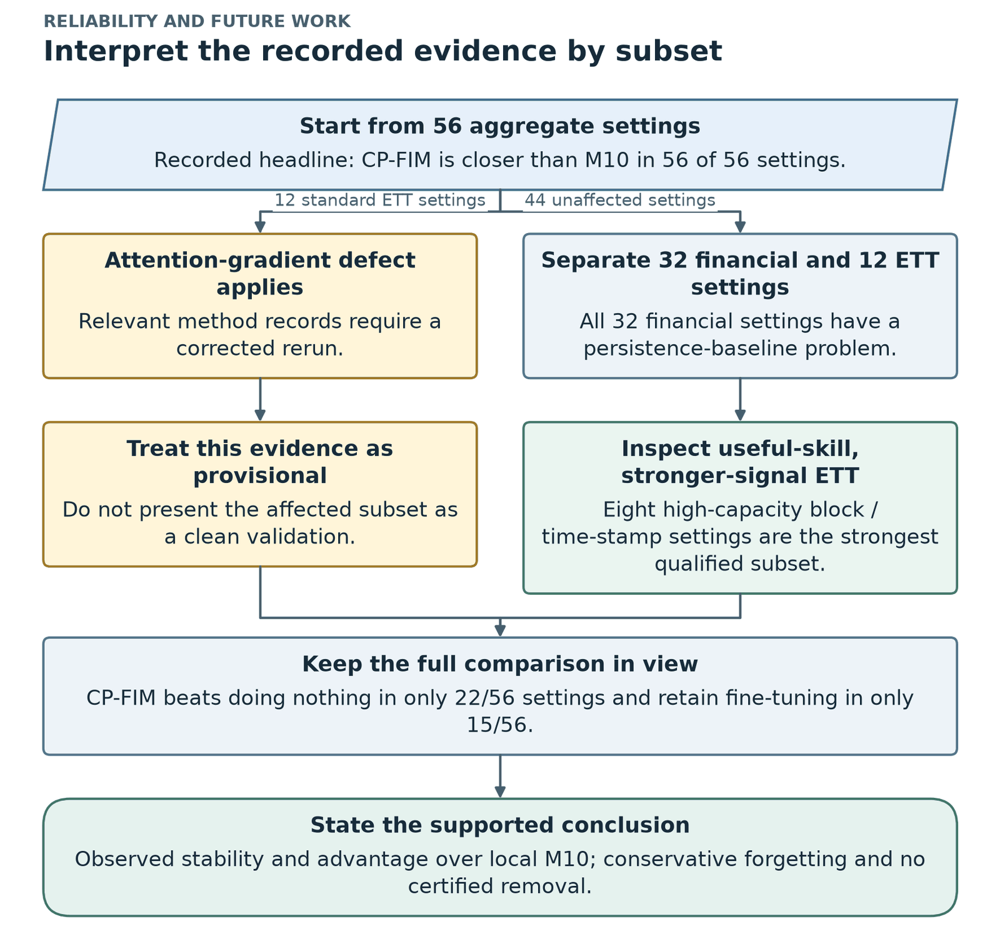
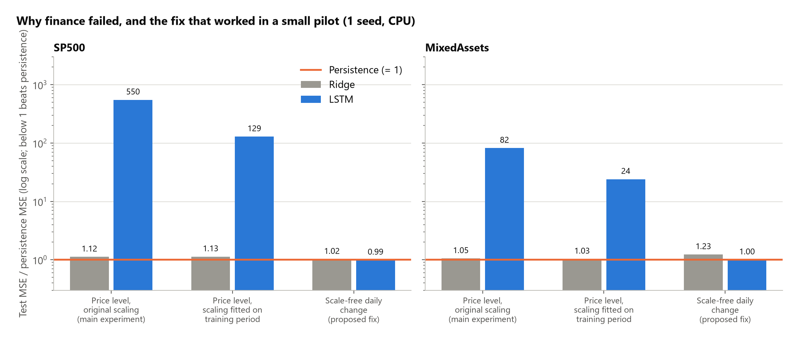

Chapter 9 of 13
Issues found and fixed, statistics and robustness
Thesis Sections 5.2.5, 5.3, 5.4 and 5.5
The evaluation found four issues. Finding, explaining and fixing them is itself a contribution.
| Issue | Adjustment | Status |
|---|---|---|
| Pareto rule stalls at the start | warm-up (3 steps) + floor/ceiling (0.05 / 0.95) | built into CP-FIM for the whole experiment |
| Attention dropout stayed active in the gradient step for PatchTST (standard regime) | also switch off attention dropout; use one attention implementation for teacher and student | correction verified on CPU; the 2,160 affected standard-regime ETT method records are reported separately |
| Financial price-level models fail against persistence | predict the scale-free next-day change instead of the price level | tested in a small pilot |
| Zero-volume errors in Yahoo data (S&P 500 on 2023-05-24, crude oil on 2023-04-06, 33 gold days) | treat zero volume as missing; fill from the previous day | included in the financial fix |
Table 5.13.
9.1 The Pareto stall: found, explained and fixed #
Theory (see CP-FIM Step 4): at step 1 the student equals the teacher, so the retain (distillation) loss and its gradient are exactly zero. The unconstrained MGDA weight then gives \(\alpha = 0\) and a zero update. The model stays at the original forever. This happens for any forget target, including TS-Unlearn's.
Evidence (Table 5.12):
| Models | First-step retain loss | Result |
|---|---|---|
| LSTM, GRU, BiLSTM, CNN-LSTM | exactly 0 | did not move at all in 192 of 192 runs |
| PatchTST, dropout 0 | about \(7\times10^{-7}\) | moved, only because of tiny numerical differences |
| PatchTST, dropout 0.3 | about \(1.3\times10^{-2}\) | moved, because attention dropout stayed on (the defect) |




Why it matters beyond this thesis: TS-Unlearn-type updates (Pareto-weighted distillation) can silently do nothing unless the weight is safeguarded.
9.2 The attention-dropout defect #
What happened: in the standard regime (dropout 0.3), PatchTST's attention dropout stayed active inside the gradient computation of the Fisher- and Pareto-based methods. Teacher and student outputs therefore differed even when their weights were identical.
Who is affected: the standard-regime ETT results of CP-FIM, its ablations, M10, M6 and M8. That is 12 of 56 aggregate settings, about 2,160 method records.
Who is not affected: the high-capacity results (dropout = 0) and the recurrent financial models (no attention).
CPU parity check (PatchTST, ETTh1), Table 5.14:
| Regime | Code | Max output difference | Retain loss | Moved? |
|---|---|---|---|---|
| Standard | original | 0.88–0.91 | \(2\times10^{-2}\) | yes |
| Standard | dropout fix | \(1.4\times10^{-6}\) | \(7\times10^{-14}\) | yes |
| Standard | dropout fix + one attention path | 0 | 0 | no (stalls exactly, as the theory says) |
| High-capacity | original | \(1.9\times10^{-6}\) | \(8\times10^{-14}\) | yes |
| High-capacity | one attention path | 0 | 0 | no |
The small remaining difference after the dropout fix comes from a fast attention implementation that is used only when no gradients are needed. With both fixes, teacher and student agree exactly.
Does the main result survive? Yes. In the 44 unaffected settings, CP-FIM beats direct noise in 44/44 (203/204 runs). Note that 32 of those 44 are financial settings with weak base forecasters. The strongest clean evidence is the 8 high-capacity ETT block and time-stamp settings: a forecaster that beats persistence and a substantial deletion signal.
| Defect repair workflow | Defect-aware interpretation |
|---|---|
 |
 |


9.3 The financial forecasting pilot #
Question: why do the financial models lose to persistence, and can it be fixed? Set-up: the same LSTM on SP500 and MixedAssets (CPU, one seed), three set-ups, plus a ridge (linear) model on the same inputs.
| Dataset | Set-up | Ridge | LSTM |
|---|---|---|---|
| SP500 | price level, original scaling (= main experiment) | 1.12 | 550 |
| SP500 | price level, scaling fitted on the training period | 1.13 | 129 |
| SP500 | scale-free daily change (proposed fix) | 1.02 | 0.99 |
| MixedAssets | price level, original scaling | 1.05 | 82 |
| MixedAssets | price level, scaling fitted on the training period | 1.03 | 24 |
| MixedAssets | scale-free daily change (proposed fix) | 1.23 | 1.00 |
Table 5.15: test MSE / persistence MSE in price space (2024 test year).


Reading it:
- A linear model on the same inputs is already close to persistence, so the failure is not inevitable for these inputs.
- The LSTM struggles with prices outside the training range (the S&P 500 and gold hit new highs in 2024).
- Better scaling helps about 4×, but it is not enough.
- Predicting the scale-free daily change brings the LSTM to about persistence level (0.99 and 1.00).
- Limitation: this is a 1-seed, 2-dataset CPU pilot. It has not been run through the full unlearning grid (future work).
9.4 Statistical analysis #
Paired comparisons with exploratory bootstrap intervals (Table 5.16) #
| CP-FIM compared with | Clearly closer | Clearly farther | No clear difference |
|---|---|---|---|
| No unlearning (M1) | 5 | 15 | 36 |
| Retain fine-tuning (FT) | 3 | 26 | 27 |
| Fisher noise + FT (M6) | 5 | 26 | 25 |
| Direct-noise (M10) | 55 | 0 | 1 |
- Against direct noise, CP-FIM is clearly closer (the whole interval favours CP-FIM) in 55/56 settings, and clearly farther in none.
- CP-FIM's distance to the oracle is 0.92–1.13× the original model's distance; it is within ±2% in 33 settings and outside that band in 23.
- A planned hypothesis that failed: "CP-FIM's advantage over direct noise grows under block deletion" was supported in only 1 of 8 dataset–regime combinations, contradicted in 4 and unclear in 3. (Reporting this is part of the thesis's transparency.)
Robustness of the main result: sign tests at several levels (Table 5.17) #
| Level (unit) | CP-FIM wins | Nominal one-sided tail |
|---|---|---|
| Paired runs (not independent; for reference) | 310 / 312 | < \(10^{-80}\) |
| Settings (mean over runs) | 56 / 56 | \(1.4\times10^{-17}\) |
| Settings (median over runs) | 56 / 56 | \(1.4\times10^{-17}\) |
| Settings unaffected by the dropout defect | 44 / 44 | \(5.7\times10^{-14}\) |
| Datasets | 8 / 8 | 0.004 |
| Architectures | 5 / 5 | 0.031 |
The tails are nominal: datasets and architectures are related, so the 8/8 and 5/5 wins are descriptive evidence rather than calibrated significance tests. (For intuition: 8/8 under a fair coin is \(0.5^8 \approx 0.004\); 5/5 is \(0.5^5 \approx 0.031\); 56/56 is \(0.5^{56} \approx 1.4\times10^{-17}\).)
Update-matched controls #
With 50 updates each, CP-FIM is still closer than anchored ascent, noisy label and retain label in 56/56 settings (311, 305 and 312 of 312 runs). Those controls still damage accuracy (> 50% worse in 161, 74 and 302 runs). The update-matched SCRUB-style and Fisher controls behave like their originals: stable and usually slightly closer than CP-FIM (CP-FIM closer in 17 and 20 of 56).
Limits of the statistics #
- Only 3 training seeds; original models are shared across requests and protocols, so runs are not fully independent.
- Bootstrap intervals are exploratory; "no clear difference" does not prove equality.
- Sign tests assume independent units, which is only approximately true for settings.
9.5 Comparison fairness #
All methods used the same data, original models, deletion requests, seeds and oracles. Baselines keep the update budgets of their original designs, and the five update-matched controls check whether the update count explains the comparison with aggressive methods. M10 shares CP-FIM's loop and safeguards but changes the target anchor, noise calibration and Fisher contrast.